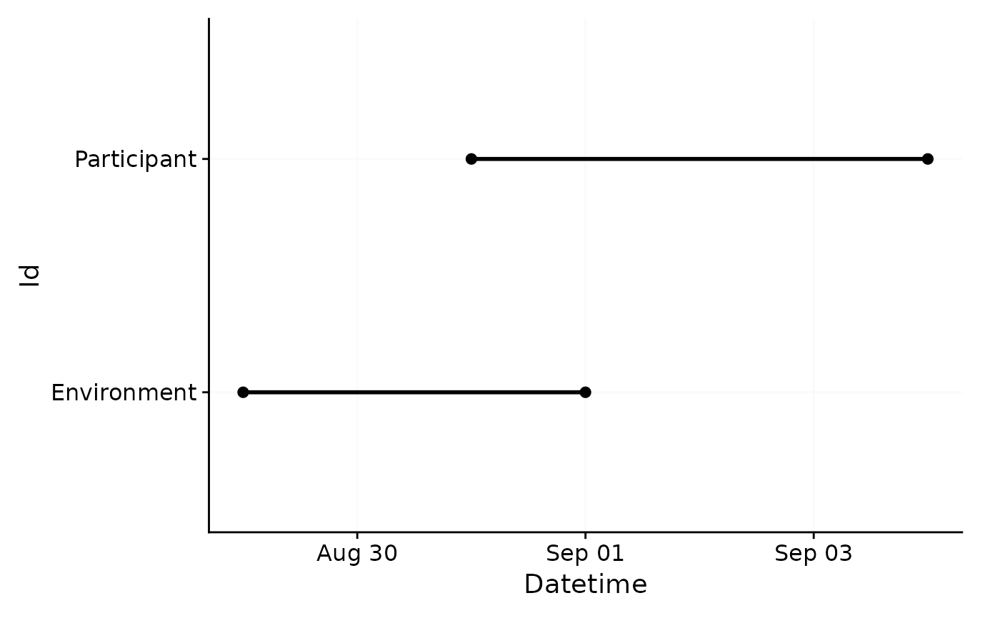
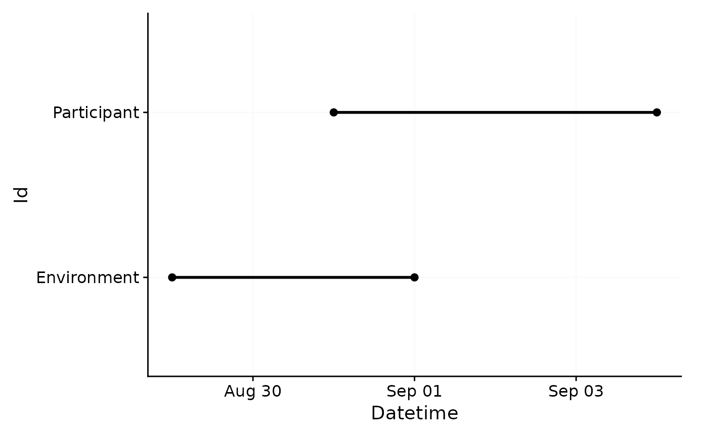

Filter multiple times based on a list of arguments.
Source:R/filter_Datetime.R
filter_Datetime_multiple.Rdfilter_Datetime_multiple() is a wrapper around filter_Datetime() or
filter_Date() that allows the cumulative filtering of Datetimes based on
varying filter conditions. It is most useful in conjunction with the
only_Id argument, e.g., to selectively cut off dates depending on
participants (see examples)
Arguments
- dataset
A light logger dataset
- arguments
A list of arguments to be passed to
filter_Datetime()orfilter_Date(). each list entry must itself be a list of arguments, e.g,list(start = "2021-01-01", only_Id = quote(Id == 216)). Expressions have to be quoted withquote()orrlang::expr().- filter_function
The function to be used for filtering, either
filter_Datetime(the default) orfilter_Date- ...
Additional arguments passed to the filter function. If the
lengthargument is provided here instead of theargument, it has to be written as a string, e.g.,length = "1 day", instead oflength = lubridate::days(1).
Examples
arguments <- list(
list(start = "2023-08-31", only_Id = quote(Id == "Participant")),
list(end = "2023-08-31", only_Id = quote(Id == "Environment")))
#compare the unfiltered dataset
sample.data.environment %>% gg_overview(Id.colname = Id)
 #compare the unfiltered dataset
sample.data.environment %>%
filter_Datetime_multiple(arguments = arguments, filter_Date) %>%
gg_overview(Id.colname = Id)

#compare the unfiltered dataset
sample.data.environment %>%
filter_Datetime_multiple(arguments = arguments, filter_Date) %>%
gg_overview(Id.colname = Id)
